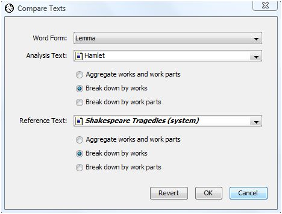

|
|
|
You've seen how WordHoard allows you to compare individual word forms and collocates in texts. WordHoard can also compare two texts by computing a single overall measure of document similarity. The more similar the vocabulary for two texts, the higher the value of the similarity measure. A similarity measure helps answer questions such as "Which other tragedies of Shakespeare are most similar to Hamlet?"
To compute a similarity value, WordHoard creates a list of all the unique word forms of the selected type (spelling or lemma) which appear in any of the texts to compare. Then within each text, WordHoard assigns a non-zero score to each word form from the overall list which appears in that text, or a zero to each word form which does not appear. This score may simply be the number of times the word appears in a text, or a value of 1 when the word appears and 0 when it does not. For example, the lemma "think (v)" appears 56 times in Hamlet, so we could use a score of 56 for Hamlet. In Othello, "think (v)" occurs 86 times, so its score in Othello would be 86. Or we could just assign a value of 1 to "think (v)" in both Othello and Hamlet, since that lemma appears in both works.
The number of unique word forms represents the number of dimensions or axes in a multidimensional word form space. Each axis corresponds to one unique word form. The numeric score for a word form in a text provides that text's position or coordinate on each word form axis. The collection of scores for all word forms in a text defines the coordinates or location of the text in the word form space. This geometrical representation allows WordHoard to use vector arithmetic to compute similarity measures.
The closer the geometric distance of the coordinates of two texts in word form space, the greater the similarity of the texts. Texts with similar vocabulary, as indicated by the word form scores, should end up close together in word form space, while texts with dissimilar vocabulary should end up far apart. Different ways of assigning score values to word forms, combined with different methods for measuring geometric distance from one text vector to another, lead to different estimates of text similarity.
WordHoard computes the following five commonly used measures of document similarity.
The cosine similarity uses the number of times the word form appears in a work as the score. For example, the lemma "think (v)" appears 56 times im Hamlet, so its score is 56 for Hamlet. In Othello, "think (v)" occurs 86 times. A word form is assigned a score of 0 for any work in which the word form does not appear.
WordHoard computes the cosine similarity value for two works by calculating the vector dot product of the score vectors for the two works divided by the square root of the product of the vector dot products of each score vector with itself. The numerator vector dot product is the sum of the products for each word form score in the two works of interest. For example, when comparing Hamlet and Othello, one of of the components of the numerator sum would be the product of the scores for "think (v)" in Hamlet and Othello, or 56 * 86. The denominator value is found by multiplying the vector dot product of the score vector for Hamlet with itself and of Othello with itself and taking the square root of the product. The resulting ratio is a value from 0.0 (entirely dissimilar) to 1.0 (entirely similar) representing the similarity of the two works.
cosine similarity = (W1 . W2) / (|W1| * |W2|)
where W1 is the first work's score vector and W2 is the second work's
score vector. The "." represents the dot-product operation.
"|a|" represents the Euclidean length of the vector a,
which is the square root of the dot product
of the vector with itself.
Geometrically, the cosine similarity value is the trigonometric cosine of the angle between the two score vectors in the multidimensional word space. The smaller the angular separation, the closer the two texts lie in word form space. Those familiar with statistics will recognize the cosine similarity as a close relative of the commonly used Pearson product moment correlation for two data vectors. The Pearson correlation coefficient represents the angular separation between two normalized data vectors measured from the mean, while the cosine similarity measures the angular separation of two data vectors measured from zero.
The cosine similarity value tends to be more liberal and usually indicates two texts are more similar than the other measures below.
The binary cosine similarity coefficient is computed exactly the same way as the regular cosine similarity except that a word form receives a score of 1 when it appears appears in a work and 0 when it does not appear.
The same binary scoring method is used for the remaining binary coefficients below.
Binary cosine similarity =
|W1 intersection W2| / (|W1| * |W2|)
where "intersection" is the set intersection operator.
The binary Dice coefficient matches the binary cosine value when the score vectors for the two works being compared contain exactly the same number of non-zero entries. The binary cosine penalizes less than the Dice coefficient when the number of non-zero score vector entries is very different for the two works. A Dice value of 0.0 means the two works are entirely dissimilar while a Dice value of 1.0 means the two works are identical.
Dice coefficient =
( 2 * |W1 intersection W2| ) / (|W1| + |W2|)
The binary Jaccard coefficient assigns lower similarity values to low-overlap cases than the Dice coefficient. The smaller the number of shared word forms, the smaller the value of the Jaccard coefficient relative to the Dice coefficient.
Jaccard coefficient = |W1 intersection W2| / |W1 union W2|
where "union" is the set union operator.
The binary overlap coefficient is 1.0 when the all of the word forms with score values equal to 1 are the same in both works being compared.
Overlap coefficient = |W1 intersection W2| / min(|W1| , |W2|)
where "min" means use the minimum value of its two arguments.
Many other similarity measures have been proposed. You can write a script to calculate your favorite similarity measure should WordHoard not provide it.
As an example, let's try to answer the following two questions.
"Which other tragedy of Shakespeare is most similar to Hamlet?"
"Which other tragedy of Shakespeare is least similar to Hamlet?"
Start by selecting "Compare Texts" from the "Analysis" menu. WordHoard displays the following dialog.

The dialog fields are as follows.
Word Form specifies the type of word form which "Word" is. You may specify either spelling or lemma.
Analysis Text provides the first work or set of works to be compared. This may be a corpus, work, work set, or word set. In our example, we select the work "Hamlet".
Reference Text provides the second set of works. This may be the same as the analysis text if you want to compare all the works in the analysis set with the each of the other works in the analysis set. In our example, we select the work set "Shakespeare's Tragedies" as the reference set.
For purposes of performing the comparison, both the analysis and reference texts may be broken down as follows.
Aggregate works and work parts asks WordHoard to display comparisons after merging all the words in all works together. This allows you to compare a work against a corpus as a whole, for example.
Break down by works is the default. WordHoard displays comparisons at the work level.
Break down by work parts asks WordHoard to display comparisons at the work part level. This is useful if you have created a work set containing work parts of interest.
In our example, we select the default "Break down by works" for both the analysis and reference texts since we want to look at comparisons between Hamlet as a whole and each of the individual tragedies.

The output table contains six columns.
The first column contains the names of the works or work parts being compared. The short names are used for works, while tags are use for work parts. This prevent this column from spreading all across the screen. The output is initially sorted by this first column.
You can find the tags for works and work parts in the Table of Contents window. Since we are looking at Shakespeare plays, select the Shakespeare tab at the table of contents window. Now select the "Display tags" checkbox. The work tags appear in parentheses after each work name.
The second column contains the cosine similarity.
The third column contains the binary cosine similarity coefficient.
The fourth column contains the binary Dice coefficient.
The fifth column contains the binary Jaccard coefficient.
The sixth column contains the binary overlap coefficient.
Let's re-sort the output by clicking on the column header for binary cosine while holding down the shift key. The results now appear sorted in descending order by binary cosine value.
Now we can answer our question "Which of Shakespeare's tragedies is most like Hamlet." Using the binary cosine measure, the play most like Hamlet in terms of its use of lemma is Othello, with a binary cosine value of 0.5198 . This isn't too surprising given that both plays feature revenge themes and more interior dialog then usual. The play least like Hamlet is Titus Andronicus, with a binary cosine value of 0.4622 . The Dice and Jaccard coefficients lead to the same conclusion. The binary overlap value places "Julius Caesar" as the tragedy most similar to Hamlet and King Lear as the least similar. The count-based cosine value places Macbeth as the most similar play to Hamlet with Titus Andronicus again as the least similar.
|
|
|